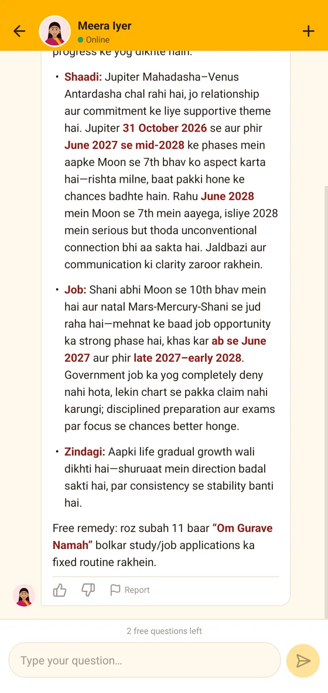
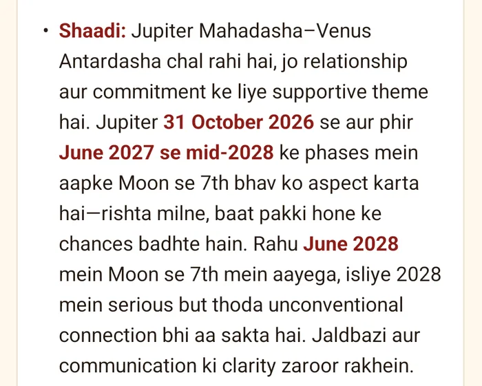
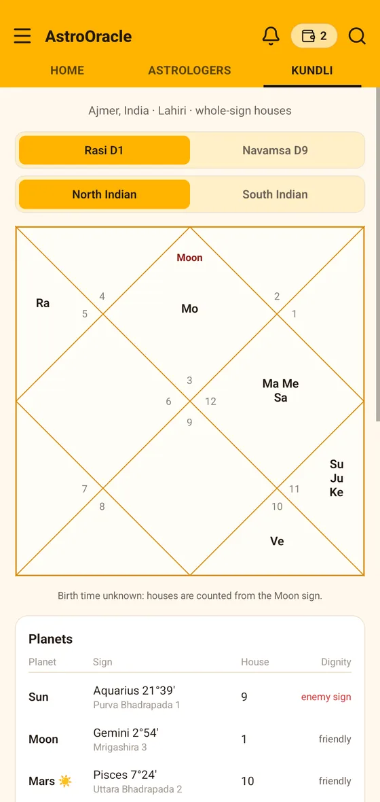
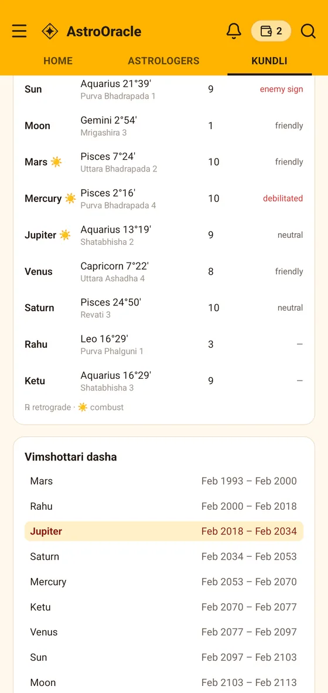
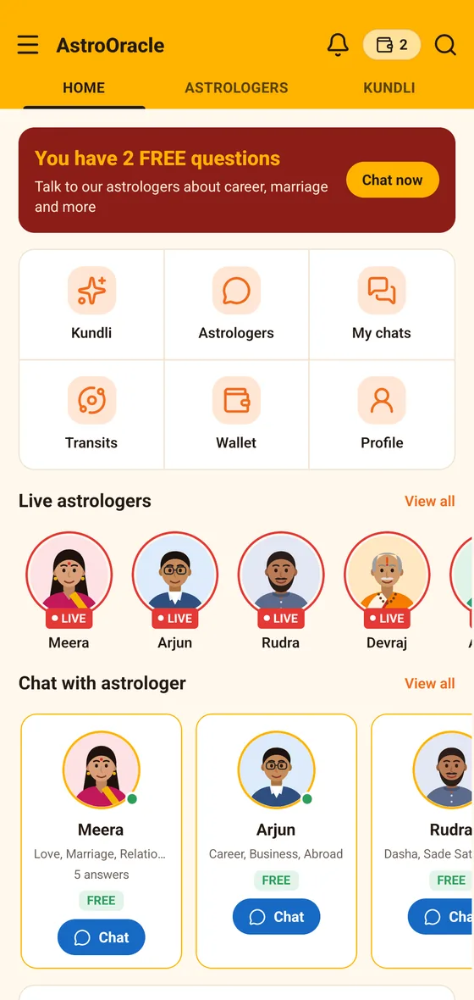
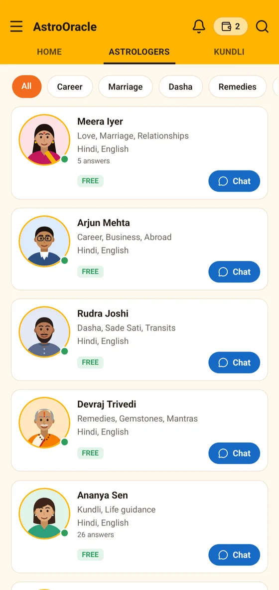
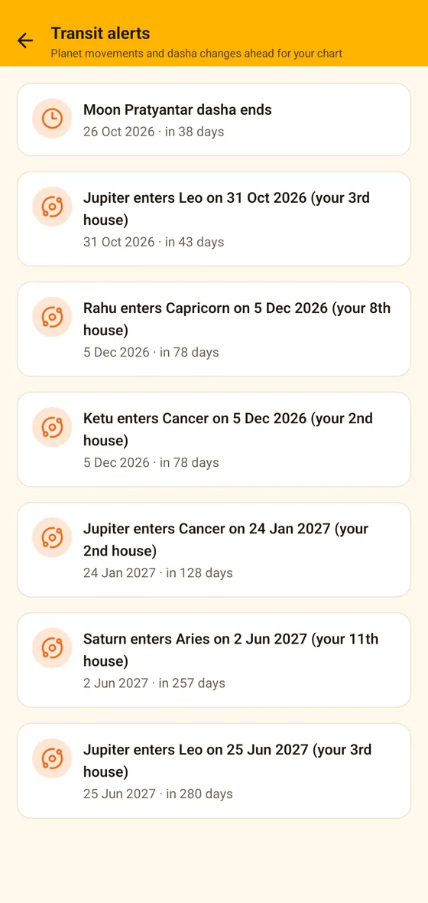

Ask anything you'd take to a Jyotishi. AstroOracle reads your Kundli and the timing around it, then answers in the language you asked in.


This is an unedited answer from the app. Every claim in it is traceable to the chart it was read from.
Date, place, time. No birth time? The reading is cast from your Moon sign and says so.

Six of them, each reading a different corner of life. Type in English, Hindi or Hinglish.
The placements it stands on, the period you are in, and the dates ahead that matter.

Sidereal, with the Lahiri ayanamsha — the zodiac Indian Jyotish is built on. Cast it once and open it as often as you like: only questions are ever counted.
Real rows from the app's transit alerts, counted against one real chart. Yours will differ — that is the point.
Every one of these is a starter question inside the app.
Home, astrologers, the answer, your Kundli, and what is coming up — exactly as they appear on a phone.



Six personas, one Jyotish engine. Ask any of them directly and it will say so — and none of them invents a past, a follower count or a rating.
A mantra, a fast, an act of service. Gemstones only where the chart supports them, and never with a promise attached.
No death predictions, no diagnosis, no pressure. A hard period is named gently, with what helps — and a bad answer can be reported in one tap.
AstroOracle's AI astrologers. Your chart is calculated by our own Jyotish engine; the astrologer you picked reads it and writes the answer in your language.
Your Kundli is, always — the charts, the placements, the dasha timeline, the doshas and your transit dates, open as often as you like. Every account also starts with three free questions. After that a question pack keeps you going — no subscription, and an answer that fails is never counted.
Then the reading is cast from your Moon sign, houses are counted from there, and the answer says so instead of pretending to a precision it doesn't have.
Vedic (Jyotish): the sidereal zodiac with the Lahiri ayanamsha, whole-sign houses, Vimshottari dasha, D9 and D10 divisional charts, and real daily transits.
They are used to calculate your chart and answer your questions, and nothing else — no selling, no advertising. See the privacy policy.
The Android app is in testing. Write to us and we'll send the link the day it opens — your Kundli free, and three questions to start with.
Get early access